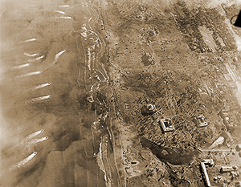
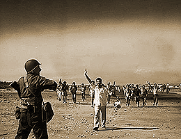

|
j
a v a s c r i p t |
January 9, 1945

Landing Craft - Lingayen
Tribune: "Air, naval units counterattacking enemy task force" — confirms the shelling at Lingayen and the presence of a large convoy south of Mindoro. The Japanese are sinking everything in sight, of course. All Manila is a-dither about rumors of a landing. Food prices are sky-high and the exchange rate is 52:1 but nobody's complaining anymore. Men are busy dusting out their American flags and shining their parade shoes while the girls are ironing their best red, white and blue dresses. The remaining Japanese walk around politely with feigned nonchalance. Those leaving are a pathetic spectacle of once proud Japanese officers stuffing their last bundle of clothes into a little carromata behind a puny pony. It's farewell to Manila and hello to chaos for them. All day today the Japanese kept blowing things up, from ships on the Pasig to barges, piers and buildings in the Port Area.

Mabuhay!
Civilians Welcome Coastguard Forty-three B-24s in two groups of 23 and 20 crisscrossed right over the city at mid-morning while Japanese anti-aircraft tried in vain to score a hit. The big birds then went on their way to probably drop their eggs on Corregidor, Bataan and Cavite. The only other American planes seen were a handful of P-38s that hit Camp Murphy. One Japanese plane was around tonight, perhaps the last of the Wild Eagles. |
|
|
|
|